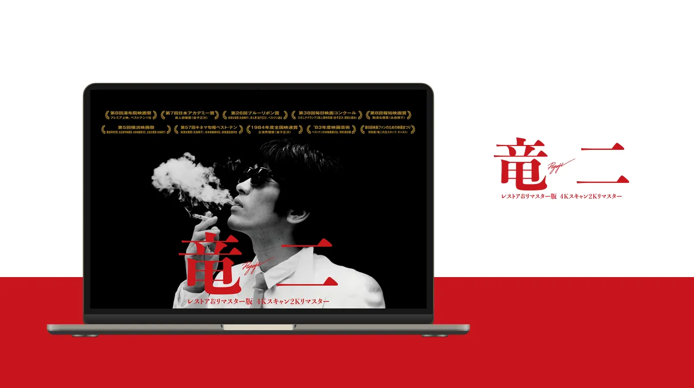

映画『竜二』
映画『竜二』の
2026
「情報は削り、
- 担当範囲
- デザイン／
コーディング （ディレクションは 別担当） - 制作時期
- 2026年10月
（約2週間）
OPENING
映画の冒頭のように、
SMARTPHONE
-
受賞歴を
2列に 組み替え、 縦長の画面でも キービジュアルが 主役になるように しています。
HOW I BUILT
- 判断は自分、
実装は Claude Code、 確認は自分 という分担で 進行。 AIには 「推測で書かない」 「実装前に 設計を提示して 承認を得る」 などのルールを課し、 作業ルールを ファイルにまとめて 管理しました。 - 見た目を
変えない修正では、 変更前後の 画面の部品の 位置・ 大きさ・ 色を 自動で記録・ 比較し、 崩れていないことを 確かめています。 - 公開は
専用のスクリプトに 一本化。 公開するファイルを 一覧で管理し、 コメントを除いて アップロード。 社内向けの言葉が 残っていれば 公開を止める 仕組みにしています。 - サーバー設定で、
httpsへの転送、 旧サイトの 画像URLを 2023年版へ転送、 404ページの表示、 ファイルの圧縮を 行っています。
2023
2023年の
- 担当範囲
- デザイン／
WordPress（Elementor）構築 - 制作時期
- 2023年7月〜9月
-
写真を
斜めに切り取った レイアウトに、 縦組みのコピーを 重ねた ファーストビューです。